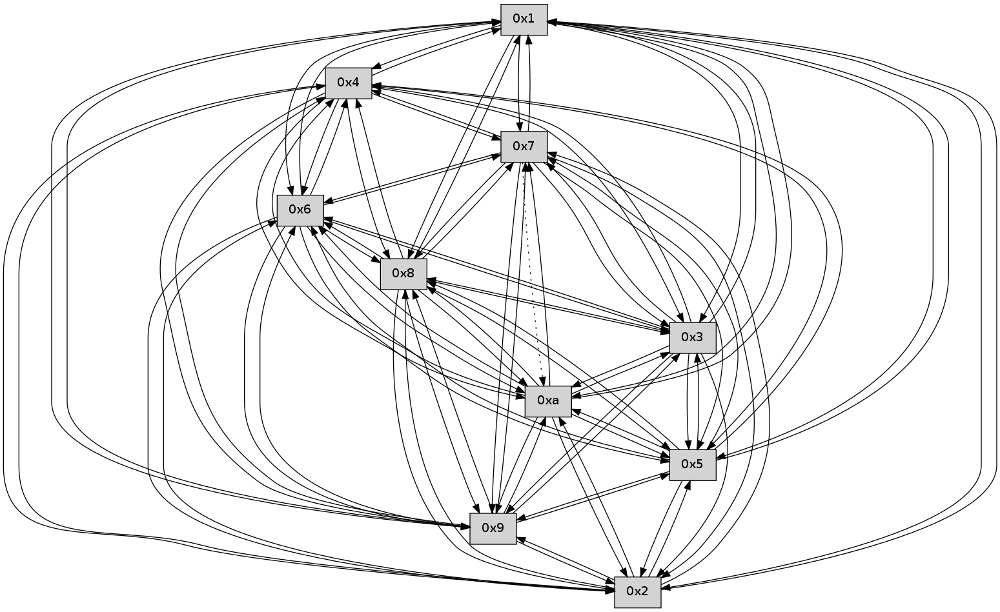

>> << IDX [start] -100 -25 -5 +0 +5 +25 +100 [270.00910902]
 Previous packets
----------------------------------------------------------------------
265.240332 beacon01(faad) #0 coord=01,02,03,04,05,06,07,0a,09,08 cycle=688.0ms assoc
-- color-indic=0 64 14 30
265.250314 beacon02(faad) #0 coord=01,02,03,04,05,06,07,0a,09,08 cycle=688.0ms assoc 64 87 01
265.260314 beacon03(faad) #0 coord=01,02,03,04,05,06,07,0a,09,08 cycle=688.0ms assoc 64 fd 4c
265.270316 beacon04(faad) #0 coord=01,02,03,04,05,06,07,0a,09,08 cycle=688.0ms assoc 64 8a a6
265.280315 beacon05(faad) #0 coord=01,02,03,04,05,06,07,0a,09,08 cycle=688.0ms assoc 64 f0 eb
265.290316 beacon06(faad) #0 coord=01,02,03,04,05,06,07,0a,09,08 cycle=688.0ms assoc 64 7e 3c
265.300315 beacon07(faad) #0 coord=01,02,03,04,05,06,07,0a,09,08 cycle=688.0ms assoc 64 04 71
265.310320 beacon0a(faad) #0 coord=01,02,03,04,05,06,07,0a,09,08 cycle=688.0ms assoc 64 75 7a
265.320320 beacon09(faad) #0 coord=01,02,03,04,05,06,07,0a,09,08 cycle=688.0ms assoc 64 fb ad
265.330321 beacon08(faad) #0 coord=01,02,03,04,05,06,07,0a,09,08 cycle=688.0ms assoc 64 81 e0
265.344143 [Hello(3): seq=174 sym=5,7,6,4,2,8,9,10,1 sysInfo= stat=5:1,0,0,0/7:9,0,0,0/6:6,0,0,0/4:14,0,0,0/2:15,0,0,0/8:12,0,0,0/9:4,0,0,0/10:10,0,0,0/1:0,0,0,0]
265.346761 [Hello(1): seq=82 sym=4,2,9,5,10,3,8,6,7 sysInfo= stat=4:13,0,0,0/2:15,0,0,0/9:2,0,0,0/5:2,0,0,0/10:0,0,0,0/3:10,0,0,0/8:0,0,0,0/6:7,0,0,0/7:8,0,0,0]
265.356151 [Hello(2): seq=171 sym=4,5,7,6,3,9,8,10,1 sysInfo= stat=4:9,0,0,0/5:13,0,0,0/7:3,0,0,0/6:5,0,0,0/3:6,0,0,0/9:6,0,0,0/8:4,0,0,0/10:1,0,0,0/1:3,0,0,0]
----------------------------------------------------------------------
266.028467 beacon01(faad) #0 coord=01,02,03,04,05,06,07,0a,09,08 cycle=688.0ms assoc
-- color-indic=0 64 a8 35
266.038450 beacon02(faad) #0 coord=01,02,03,04,05,06,07,0a,09,08 cycle=688.0ms assoc 64 3b 04
266.048450 beacon03(faad) #0 coord=01,02,03,04,05,06,07,0a,09,08 cycle=688.0ms assoc 64 41 49
266.058451 beacon04(faad) #0 coord=01,02,03,04,05,06,07,0a,09,08 cycle=688.0ms assoc 64 36 a3
266.068449 beacon05(faad) #0 coord=01,02,03,04,05,06,07,0a,09,08 cycle=688.0ms assoc 64 4c ee
266.078452 beacon06(faad) #0 coord=01,02,03,04,05,06,07,0a,09,08 cycle=688.0ms assoc 64 c2 39
266.088451 beacon07(faad) #0 coord=01,02,03,04,05,06,07,0a,09,08 cycle=688.0ms assoc 64 b8 74
266.098454 beacon0a(faad) #0 coord=01,02,03,04,05,06,07,0a,09,08 cycle=688.0ms assoc 64 c9 7f
266.108455 beacon09(faad) #0 coord=01,02,03,04,05,06,07,0a,09,08 cycle=688.0ms assoc 64 47 a8
266.118454 beacon08(faad) #0 coord=01,02,03,04,05,06,07,0a,09,08 cycle=688.0ms assoc 64 3d e5
266.129616 [Hello(6): seq=174 sym=2,3,5,4,7,9,8,10,1 sysInfo= stat=2:3,0,0,0/3:0,0,0,0/5:6,0,0,0/4:4,0,0,0/7:7,0,0,0/9:13,0,0,0/8:15,0,0,0/10:13,0,0,0/1:13,0,0,0]
266.132919 [Hello(9): seq=117 sym=5,2,3,4,7,6,8,10,1 sysInfo= stat=5:5,0,0,0/2:6,0,0,0/3:7,0,0,0/4:0,0,0,0/7:12,0,0,0/6:5,0,0,0/8:6,0,0,0/10:6,0,0,0/1:13,0,0,0]
266.136094 [Hello(10): seq=106 sym=6,3,2,5,9,8,7,4,1 sysInfo= stat=6:5,0,0,0/3:0,0,0,0/2:15,0,0,0/5:0,0,0,0/9:5,0,0,0/8:7,0,0,0/7:0,0,0,0/4:11,0,0,0/1:5,0,0,0]
266.140436 [Hello(8): seq=117 sym=5,2,3,4,7,6,9,10,1 sysInfo= stat=5:15,0,0,0/2:15,0,0,0/3:0,0,0,0/4:2,0,0,0/7:13,0,0,0/6:15,0,0,0/9:4,0,0,0/10:2,0,0,0/1:2,0,0,0]
266.143969 [Hello(7): seq=174 sym=2,3,5,6,4,8,9,10,1 sysInfo= stat=2:14,0,0,0/3:14,0,0,0/5:10,0,0,0/6:1,0,0,0/4:14,0,0,0/8:9,0,0,0/9:10,0,0,0/10:10,0,0,0/1:0,0,0,0]
----------------------------------------------------------------------
266.816599 beacon01(faad) #0 coord=01,02,03,04,05,06,07,0a,09,08 cycle=688.0ms assoc
-- color-indic=0 64 9c 2d
266.826582 beacon02(faad) #0 coord=01,02,03,04,05,06,07,0a,09,08 cycle=688.0ms assoc 64 0f 1c
266.836582 beacon03(faad) #0 coord=01,02,03,04,05,06,07,0a,09,08 cycle=688.0ms assoc 64 75 51
266.846582 beacon04(faad) #0 coord=01,02,03,04,05,06,07,0a,09,08 cycle=688.0ms assoc 64 02 bb
266.856583 beacon05(faad) #0 coord=01,02,03,04,05,06,07,0a,09,08 cycle=688.0ms assoc 64 78 f6
266.866584 beacon06(faad) #0 coord=01,02,03,04,05,06,07,0a,09,08 cycle=688.0ms assoc 64 f6 21
266.876582 beacon07(faad) #0 coord=01,02,03,04,05,06,07,0a,09,08 cycle=688.0ms assoc 64 8c 6c
266.886587 beacon0a(faad) #0 coord=01,02,03,04,05,06,07,0a,09,08 cycle=688.0ms assoc 64 fd 67
266.896588 beacon09(faad) #0 coord=01,02,03,04,05,06,07,0a,09,08 cycle=688.0ms assoc 64 73 b0
266.906589 beacon08(faad) #0 coord=01,02,03,04,05,06,07,0a,09,08 cycle=688.0ms assoc 64 09 fd
266.917765 [Hello(4): seq=175 sym=5,7,6,2,3,9,8,10,1 sysInfo= stat=5:11,0,0,0/7:0,0,0,0/6:6,0,0,0/2:15,0,0,0/3:3,0,0,0/9:7,0,0,0/8:7,0,0,0/10:8,0,0,0/1:3,0,0,0]
266.922490 [Hello(5): seq=175 sym=7,6,4,3,1,9,8,10,2 sysInfo= stat=7:12,0,0,0/6:9,0,0,0/4:8,0,0,0/3:5,0,0,0/1:3,0,0,0/9:6,0,0,0/8:15,0,0,0/10:6,0,0,0/2:8,0,0,0]
266.925695 [Hello(3): seq=175 sym=5,7,6,4,2,8,9,10,1 sysInfo= stat=5:1,0,0,0/7:10,0,0,0/6:7,0,0,0/4:14,0,0,0/2:0,0,0,0/8:13,0,0,0/9:5,0,0,0/10:11,0,0,0/1:1,0,0,0]
266.930498 [Hello(2): seq=172 sym=4,5,7,6,3,9,8,10 sysInfo= stat=4:9,0,0,0/5:13,0,0,0/7:4,0,0,0/6:6,0,0,0/3:6,0,0,0/9:7,0,0,0/8:5,0,0,0/10:2,0,0,0]
266.933094 [Hello(1): seq=83 sym=4,2,9,5,10,3,8,6,7 sysInfo= stat=4:13,0,0,0/2:0,0,0,0/9:3,0,0,0/5:2,0,0,0/10:1,0,0,0/3:10,0,0,0/8:1,0,0,0/6:8,0,0,0/7:9,0,0,0]
----------------------------------------------------------------------
267.604732 beacon01(faad) #0 coord=01,02,03,04,05,06,07,0a,09,08 cycle=688.0ms assoc
-- color-indic=0 64 20 28
267.614714 beacon02(faad) #0 coord=01,02,03,04,05,06,07,0a,09,08 cycle=688.0ms assoc 64 b3 19
267.624713 beacon03(faad) #0 coord=01,02,03,04,05,06,07,0a,09,08 cycle=688.0ms assoc 64 c9 54
267.634714 beacon04(faad) #0 coord=01,02,03,04,05,06,07,0a,09,08 cycle=688.0ms assoc 64 be be
267.644715 beacon05(faad) #0 coord=01,02,03,04,05,06,07,0a,09,08 cycle=688.0ms assoc 64 c4 f3
267.654716 beacon06(faad) #0 coord=01,02,03,04,05,06,07,0a,09,08 cycle=688.0ms assoc 64 4a 24
267.664716 beacon07(faad) #0 coord=01,02,03,04,05,06,07,0a,09,08 cycle=688.0ms assoc 64 30 69
267.674720 beacon0a(faad) #0 coord=01,02,03,04,05,06,07,0a,09,08 cycle=688.0ms assoc 64 41 62
267.684721 beacon09(faad) #0 coord=01,02,03,04,05,06,07,0a,09,08 cycle=688.0ms assoc 64 cf b5
267.694721 beacon08(faad) #0 coord=01,02,03,04,05,06,07,0a,09,08 cycle=688.0ms assoc 64 b5 f8
267.705888 [Hello(10): seq=107 sym=6,3,2,5,8,7,4,1 sysInfo= stat=6:5,0,0,0/3:1,0,0,0/2:0,0,0,0/5:1,0,0,0/8:8,0,0,0/7:1,0,0,0/4:12,0,0,0/1:6,0,0,0]
267.709255 [Hello(7): seq=175 sym=2,3,5,6,4,8,9,1 asym=10 sysInfo= stat=2:15,0,0,0/3:15,0,0,0/5:11,0,0,0/6:1,0,0,0/4:15,0,0,0/8:9,0,0,0/9:10,0,0,0/1:1,0,0,0/10:10,0,0,0]
267.716057 [Hello(9): seq=118 sym=5,2,3,4,7,6,8,10,1 sysInfo= stat=5:6,0,0,0/2:7,0,0,0/3:8,0,0,0/4:1,0,0,0/7:13,0,0,0/6:5,0,0,0/8:7,0,0,0/10:7,0,0,0/1:14,0,0,0]
267.718896 [Hello(8): seq=118 sym=5,2,3,4,7,6,9,10,1 sysInfo= stat=5:0,0,0,0/2:0,0,0,0/3:1,0,0,0/4:3,0,0,0/7:14,0,0,0/6:15,0,0,0/9:4,0,0,0/10:2,0,0,0/1:3,0,0,0]
----------------------------------------------------------------------
268.392862 beacon01(faad) #0 coord=01,02,03,04,05,06,07,0a,09,08 cycle=688.0ms assoc
-- color-indic=0 64 e4 26
268.402844 beacon02(faad) #0 coord=01,02,03,04,05,06,07,0a,09,08 cycle=688.0ms assoc 64 77 17
268.412844 beacon03(faad) #0 coord=01,02,03,04,05,06,07,0a,09,08 cycle=688.0ms assoc 64 0d 5a
268.422845 beacon04(faad) #0 coord=01,02,03,04,05,06,07,0a,09,08 cycle=688.0ms assoc 64 7a b0
268.432845 beacon05(faad) #0 coord=01,02,03,04,05,06,07,0a,09,08 cycle=688.0ms assoc 64 00 fd
268.442846 beacon06(faad) #0 coord=01,02,03,04,05,06,07,0a,09,08 cycle=688.0ms assoc 64 8e 2a
268.452847 beacon07(faad) #0 coord=01,02,03,04,05,06,07,0a,09,08 cycle=688.0ms assoc 64 f4 67
268.462852 beacon0a(faad) #0 coord=01,02,03,04,05,06,07,0a,09,08 cycle=688.0ms assoc 64 85 6c
268.472849 beacon09(faad) #0 coord=01,02,03,04,05,06,07,0a,09,08 cycle=688.0ms assoc 64 0b bb
268.482851 beacon08(faad) #0 coord=01,02,03,04,05,06,07,0a,09,08 cycle=688.0ms assoc 64 71 f6
268.494036 [Hello(1): seq=84 sym=4,2,9,5,10,3,8,6,7 sysInfo= stat=4:13,0,0,0/2:0,0,0,0/9:4,0,0,0/5:2,0,0,0/10:2,0,0,0/3:10,0,0,0/8:2,0,0,0/6:8,0,0,0/7:10,0,0,0]
268.497490 [Hello(3): seq=176 sym=5,7,6,4,2,8,9,10,1 sysInfo= stat=5:1,0,0,0/7:11,0,0,0/6:7,0,0,0/4:14,0,0,0/2:1,0,0,0/8:14,0,0,0/9:6,0,0,0/10:12,0,0,0/1:2,0,0,0]
268.500372 [Hello(4): seq=176 sym=5,7,6,2,3,9,8,10,1 sysInfo= stat=5:12,0,0,0/7:1,0,0,0/6:7,0,0,0/2:0,0,0,0/3:4,0,0,0/9:8,0,0,0/8:8,0,0,0/10:8,0,0,0/1:4,0,0,0]
268.503057 [Hello(5): seq=176 sym=7,6,4,3,1,9,8,10,2 sysInfo= stat=7:13,0,0,0/6:10,0,0,0/4:8,0,0,0/3:6,0,0,0/1:4,0,0,0/9:7,0,0,0/8:0,0,0,0/10:6,0,0,0/2:9,0,0,0]
268.509321 [Hello(2): seq=173 sym=4,5,7,6,9,8,10,1 sysInfo= stat=4:9,0,0,0/5:13,0,0,0/7:5,0,0,0/6:6,0,0,0/9:8,0,0,0/8:6,0,0,0/10:2,0,0,0/1:0,0,0,0]
----------------------------------------------------------------------
269.180995 beacon01(faad) #0 coord=01,02,03,04,05,06,07,0a,09,08 cycle=688.0ms assoc
-- color-indic=0 64 58 23
269.190978 beacon02(faad) #0 coord=01,02,03,04,05,06,07,0a,09,08 cycle=688.0ms assoc 64 cb 12
269.200977 beacon03(faad) #0 coord=01,02,03,04,05,06,07,0a,09,08 cycle=688.0ms assoc 64 b1 5f
269.210978 beacon04(faad) #0 coord=01,02,03,04,05,06,07,0a,09,08 cycle=688.0ms assoc 64 c6 b5
269.220978 beacon05(faad) #0 coord=01,02,03,04,05,06,07,0a,09,08 cycle=688.0ms assoc 64 bc f8
269.230979 beacon06(faad) #0 coord=01,02,03,04,05,06,07,0a,09,08 cycle=688.0ms assoc 64 32 2f
269.240979 beacon07(faad) #0 coord=01,02,03,04,05,06,07,0a,09,08 cycle=688.0ms assoc 64 48 62
269.250983 beacon0a(faad) #0 coord=01,02,03,04,05,06,07,0a,09,08 cycle=688.0ms assoc 64 39 69
269.260982 beacon09(faad) #0 coord=01,02,03,04,05,06,07,0a,09,08 cycle=688.0ms assoc 64 b7 be
269.270983 beacon08(faad) #0 coord=01,02,03,04,05,06,07,0a,09,08 cycle=688.0ms assoc 64 cd f3
269.282468 [Hello(10): seq=108 sym=6,3,2,5,9,8,7,4,1 sysInfo= stat=6:5,0,0,0/3:2,0,0,0/2:1,0,0,0/5:2,0,0,0/9:0,0,0,0/8:9,0,0,0/7:2,0,0,0/4:13,0,0,0/1:7,0,0,0]
269.285498 [Hello(7): seq=176 sym=2,3,5,6,4,8,9,1 asym=10 sysInfo= stat=2:0,0,0,0/3:0,0,0,0/5:12,0,0,0/6:1,0,0,0/4:0,0,0,0/8:10,0,0,0/9:11,0,0,0/1:2,0,0,0/10:10,0,0,0]
269.288647 [Hello(9): seq=119 sym=5,2,3,4,7,6,8,10,1 sysInfo= stat=5:7,0,0,0/2:8,0,0,0/3:9,0,0,0/4:2,0,0,0/7:13,0,0,0/6:5,0,0,0/8:8,0,0,0/10:7,0,0,0/1:15,0,0,0]
269.292969 [Hello(8): seq=119 sym=5,2,3,4,7,6,9,10,1 sysInfo= stat=5:1,0,0,0/2:1,0,0,0/3:2,0,0,0/4:4,0,0,0/7:14,0,0,0/6:15,0,0,0/9:4,0,0,0/10:2,0,0,0/1:4,0,0,0]
----------------------------------------------------------------------
269.969126 beacon01(faad) #0 coord=01,02,03,04,05,06,07,0a,09,08 cycle=688.0ms assoc
-- color-indic=0 64 8c 16
269.979108 beacon02(faad) #0 coord=01,02,03,04,05,06,07,0a,09,08 cycle=688.0ms assoc 64 1f 27
269.989109 beacon03(faad) #0 coord=01,02,03,04,05,06,07,0a,09,08 cycle=688.0ms assoc 64 65 6a
269.999110 beacon04(faad) #0 coord=01,02,03,04,05,06,07,0a,09,08 cycle=688.0ms assoc 64 12 80